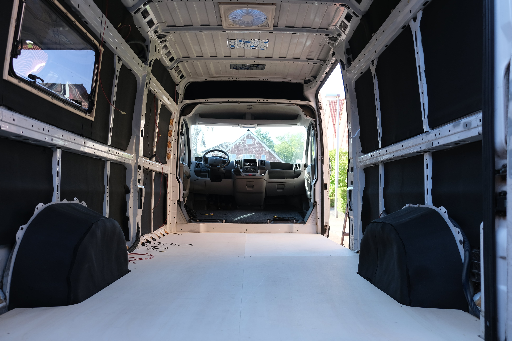
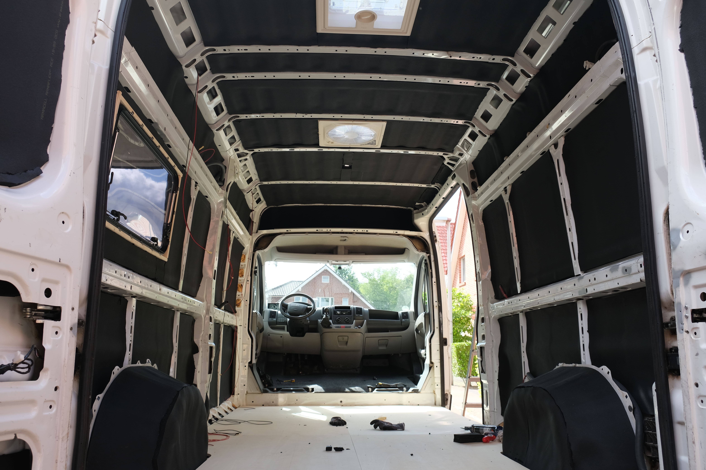
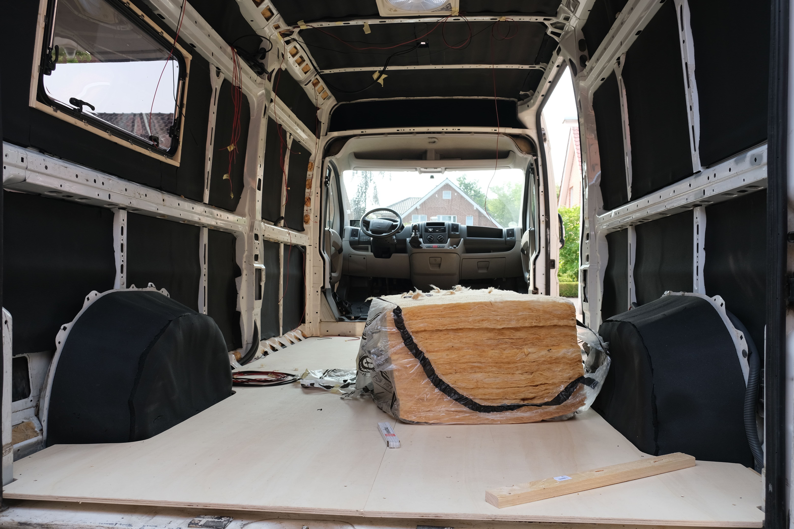

Van Conversion
Blogupdate numero uno!
 Die ersten Kabel waren gezogen, doch durch eine noch anstehende Lackierung, mussten wir als Erstes alles von außen fertig haben. Somit zogen wir als Nächstes die Solarkabel, für die wir einen Durchbruch durch das Dach machen mussten. Wieder einmal kletterte ich mit der Stichsäge auf dem Dach herum und hoffte einfach keine dauerhafte Delle zu hinterlassen. Das Loch war gemacht und die Durchführung angeklebt, so wurden dann die Solarkabel gekürzt und hindurchgezogen. Zusätzlich zu den anderen paar Kabeln, hatten wir nun schon einen kleinen Kabelbaum, den bereits jetzt nur noch ich durchblicken konnte.
Mit der Durchführung war die Decke dann auch bereit isoliert zu werden, wobei wir vorher noch die Unterkonstruktion für die Decke bauen wollten. Es sollten in gewissen Abständen vier Holzlatten an den Metallträgern des Autos befestigt werden, damit wir die Deckenkonstruktion in den Latten befestigen können, statt viele Löcher in das Autogestell zu bohren. Wir kürzten die Latten, hatten alles geplant und setzten die erste Latte an und dann das. Wir hatten die Biegung der Decke unterschätzt. Es war nicht möglich unsere Hölzer an der Decke zu befestigen. Das war das erste Mal, das etwas, was wir fest eingeplant hatten, nicht funktioniert hat. Aber es half ja alles nichts, wir einigten uns darauf, unsere Decke nun doch in den Trägern zu verschrauben und begannen mit der Isolierung der letzten großen freien Flächen.
Als nun auch die Decke fast schwarz war, waren wir aber noch lange nicht fertig mit der Isolierung. Es waren die engen kleinen Schächte, die die Träger des Autos bildeten. Diese benutzten wir für all unsere Kabelkanäle und zogen auch noch die letzten Kabel durch die Schächte. Ich überprüfte mehrmals, ob ich wirklich an alle Kabel gedacht habe, da eine spätere Korrektur eher schwierig wäre, aber nach wiederholtem Blick auf meinen kleinen provisorischen Schaltplan, erklärte ich die vorbereiteten Kabel als fertig. Somit konnten wir auch wieder zurück zu unserem Lieblingsthema, der Isolierung. Nun wo die kleinen Schächte mit Kabeln versehen waren, stopften wir alle übrig gewordenen Löcher und Lücken mit Standard Dämmwolle fürs Haus, selbstverständlich mit der richtigen Schutzausrüstung ausgestattet. Zu guter Letzt durften wir dann endlich die noch offenen weißen Schächte mit dem dünneren Armaflex verkleiden und fanden dann einen recht schwarzen Innenraum mit ein paar Kabeln vor uns.
"Schluss mit dem träumen, weitermachen." hat zwar nicht immer funktioniert, kam uns aber öfters in den Sinn, als wir wollten. Wir hatten immer mal Momente, in denen wir glücklich über das waren, was wir geschafft hatten, doch gleichzeitig eher weniger Lust mit der neuen Baustelle anzufangen. Als Nächstes sollte nämlich ein neuer Lack fürs Auto her. Eine Thematik, mit der wir noch nie etwas zu tun hatten und wo wirklich viel schieflaufen kann, aber gleichzeitig freuten wir uns darauf, das alte weiß des Jumpers endlich loszuwerden und das Auto auch von außen zu unserem zu machen.